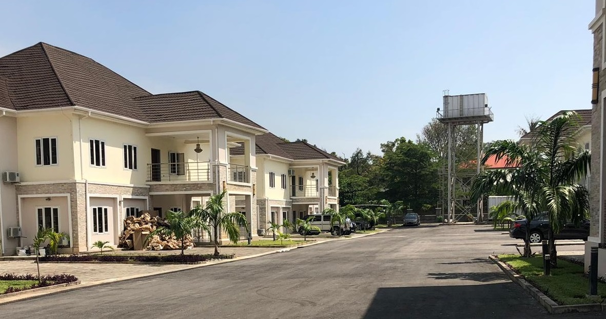

<section id="firmContainer">
  <div class="container">
    <div class="flexRowWrap">
      <aside>
        <app-info-button-aside></app-info-button-aside>
      </aside>
      <article>
        <h1><strong>We guide a demanding clientele in the search for the extraordinary</strong></h1>
        <hr />
        
        <hr />
        <p>Working within the national and international property market, Sage Capita Luxury Real Estate was created
          solely to
          specialise in the Italian luxury real estate segment. The company has created important partnerships,
          professional
          synergies and relationships focused on identifying Clients and Investors coming from consolidated economies
          and
          emerging markets. From this premise, the first steps towards the development of an operational model were
          taken
          which lead us to accept every year properties with specific historic and artistic characteristics,
          architectonic
          heritage or geographical significance. </p>
        <p>The careful selection of properties carried out by professionals at Sage Capita Luxury Real Estate is
          finalised
          towards the most proficient placement of properties within the selected target audience. For this reason the
          company invests heavily in professional photo shoots, marketing campaigns and integrated communication
          strategies
          in order to optimise requests and proposals from the reference market. The decision to internalise within the
          company all such initiatives and professional resources usually managed by outsourcing allows us to guarantee
          a
          series of services of additional value. These include geo-marketing studies, environmental and historic
          research,
          analysis of the potential or risk related to properties, studies related to structural development of real
          estate
          and of short term profitability of investments. The practicality of Sage Capita Luxury Real Estate is based on
          unconditional principles and objectivity which offers our Clients peace of mind and absolute certainty.
          Professionalism and efficiency are the basis of the work ethic of both directors and staff at Sage Capita,
          developed
          in total transparency and integrated into Client management while guaranteeing absolute privacy and
          discretion.
        </p>
        <p>With the aim of opening new commercial relationships and consolidating a network of relationships with
          clients
          and foreign partners, Sage Capita Luxury Real Estate is making a series of public engagements during which our
          representatives will be present in some of the main european and international financial hubs. The meetings
          will
          take place exclusively by appointment, and we invite anybody interested in participating to contact us with
          reasonable advance warning at our email address info@sagecapita.com or by calling our offices to request an
          appointment.</p>
        <p>Sage Capita is also frequently present in some of the main european cities including Montecarlo, Zurich,
          Geneva,
          Paris and London, cities for which it is possible to request an appointment independently of our tour program.
        </p>
        <button>COMPANY PROFILE</button>
      </article>
    </div>
  </div>
</section>
